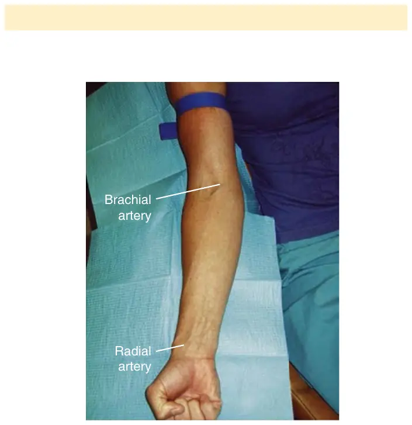

نسخه استخراجشده؛ ترجمه یا تأیید علمی انجام نشده است. وضعیت: captured
خانمی ۵۵ ساله برای ترمیم مولر اول پایین آمده و قرار است IANB بگیرد. دستیار با کاف معمولی بزرگسال، روی بازوی چاق او، فشار ۱۶۶/۹۸ را ثبت کرده. پیش از تزریق به این عدد اعتماد میکنی؟
حداقل معاینه برای هر بیمار: علائم حیاتی و نگاه به ظاهر بیمار. پرسشنامه گذشته را نشان میدهد و علائم حیاتی وضع همین لحظه را. فشار، نبض و ریتم، و تنفس را برای همه بگیر؛ دما، قد و وزن اختیاریاند مگر شک خاصی داشته باشی.
برای اندازهگیری دوباره دستکم ۱۵ ثانیه صبر کن تا خون بازو تخلیه شود.
نکتهی طلایی: در بیمار بتابلاکر غیرانتخابی، مثل پروپرانولول، فشار و نبض را ۵ تا ۱۰ دقیقه پس از تزریق بیحسی تنگکنندهدار دوباره بسنج.
